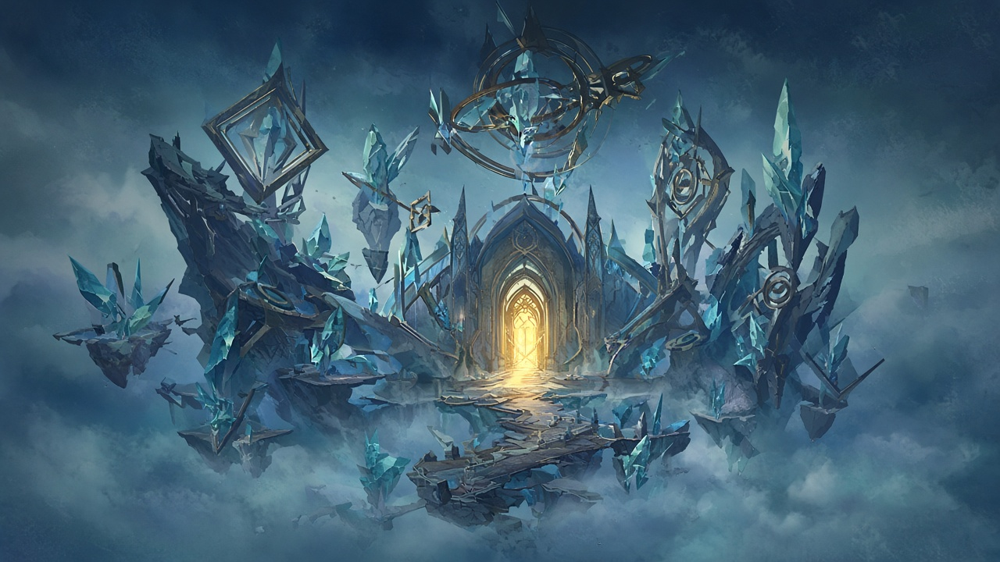

Fractal Skips
Browse community skip routes, submit new strategies, and see live updates as tips are posted.
Fractal Skip Hub is a crowdsourced Guild Wars 2 resource for fractal routes and skip strategies. Players share what works, vote on useful tips, and help the community clear fractals faster.
Looking for fight-specific gear? Use the Gear page to find recommended sigils and relics for fractals and raids based on your profession and role.

Browse community skip routes, submit new strategies, and see live updates as tips are posted.
Look up recommended sigils and relics by profession, role, and fight, with item details from the Guild Wars 2 API.
Authenticated players will submit skip notes tied to a fractal. Everyone else can browse those tips and upvote the ones that actually save time. Daily fractal info and item details will come from the official Guild Wars 2 API, and new submissions will show up for connected users over WebSocket without a page refresh.
Placeholder note — login, database, API, and live updates are not wired up yet.